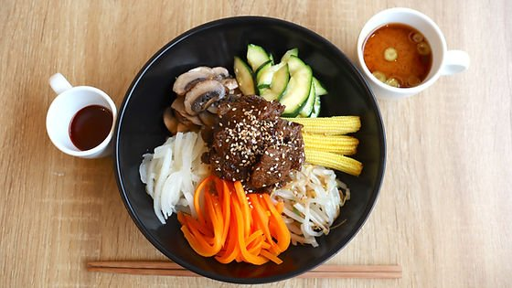
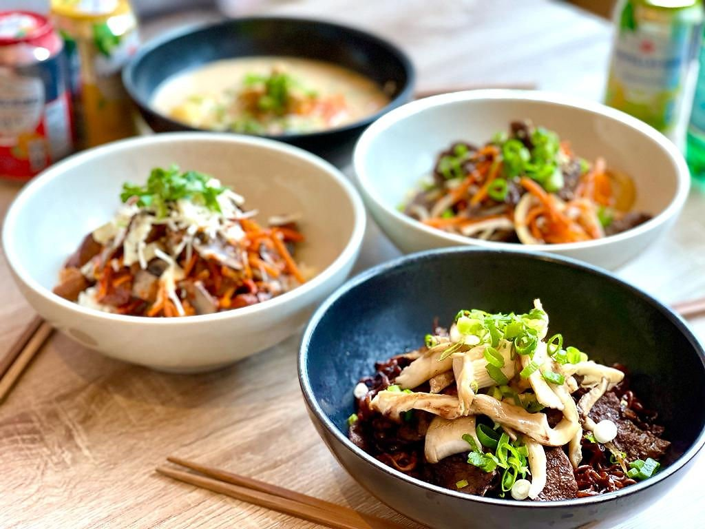
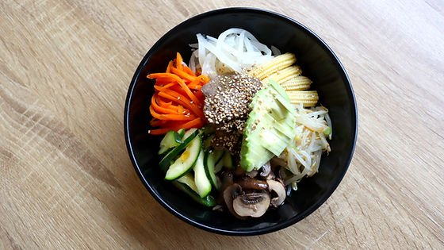
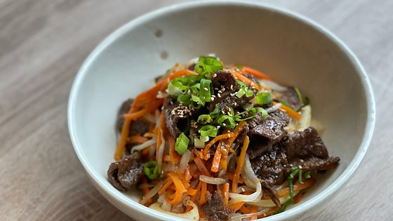
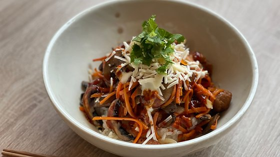
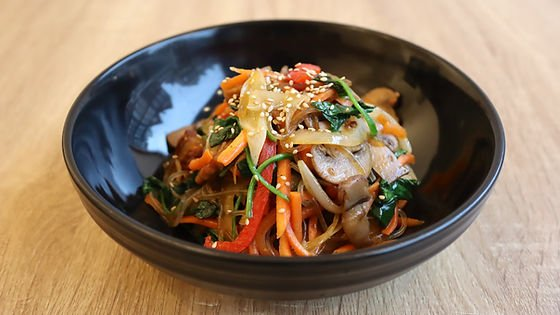
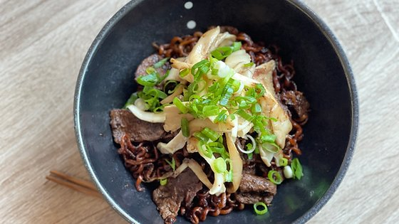
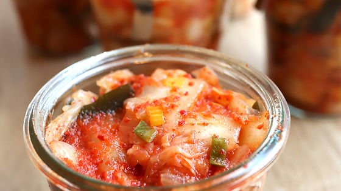

BibimHapje €14,00
Koreaanse poke bowl: rijst, soja-beef, gebakken en gekruide groenten, chilipeperpasta en sojasaus. Meng alles door elkaar als je gaat eten.

Vegan Koreaans & Japans afhaaleten
Albert Cuypstraat 89, Amsterdam
Rijstkommen, noedels, huisgemaakte kimchi en miso. Alles 100% plantaardig en vers voor je gekookt, om mee te nemen of hier aan een van de paar tafels te eten.
Open vanaf 16:00, donderdag gesloten
Alles op de kaart is vegan. De ‘beef’ en ‘chicken’ zijn van soja, de kimchi maken we zelf zonder vissaus.

Koreaanse poke bowl: rijst, soja-beef, gebakken en gekruide groenten, chilipeperpasta en sojasaus. Meng alles door elkaar als je gaat eten.

Bibimbap met avocado.

Soja-beef in zoete sojasaus op rijst.

Pittige soja-chicken met vegan kaas op rijst.
Mild pittig

Gebakken zoete-aardappelnoedels (een soort glasnoedels) met tempeh, het traditionele Indonesische product van gefermenteerde sojabonen. Tempeh heeft een heel eigen smaak: je vindt het heerlijk of juist niet.

Noedels met Koreaanse zwarte-bonensaus, oesterzwam, lente-ui en gemarineerde soja-beef.

Koreaanse gefermenteerde, pittige groenten, zonder vissaus.
Mild pittig
Japanse misosoep in een kop.
Deze twee kun je niet online bestellen. Wil je ze toch meenemen? Neem dan je eigen kom mee, want we gebruiken geen plastic bakjes meer.
Afhalen, hier eten, bellen of laten bezorgen: alles wordt pas gekookt als je bestelt, in volgorde van binnenkomst.
Bestel online en haal op aan de Albert Cuypstraat. Minimaal €10, je bestelling is binnen ongeveer 20 minuten klaar.
Bestel onlineWe hebben maar een paar tafels, dus voor hier eten is reserveren echt aan te raden. Je kiest een tijd tussen 17:00 en 20:30.
Reserveer een tafelBestellen om af te halen kan ook telefonisch. Kom je met 5 personen of meer? Bel dan even of er plek is.
Bel 06 8475 1489Tip voor de winter: tussen 18:00 en 19:00 komen de meeste bestellingen tegelijk binnen. Kies dan liever een ander moment, of reserveer.
In Japan is de depachika de etenshal in de kelder van een warenhuis: een plek vol lekkers om mee te nemen. Zo’n plek willen wij voor jou zijn, een Aziatische eetplek aan de Albert Cuyp.
Op 14 maart 2020 gingen we opnieuw open als vegan zaak. We willen lekker eten maken en tegelijk goed zorgen voor de aarde, en we geloven dat dat samen kan.
We brengen nieuw vegan streetfood naar Amsterdam. Om met plantaardige ingrediënten echt indruk te maken, kruiden we stevig. Daarom smaakt ons eten anders dan traditioneel Koreaans en Japans eten: het is onze eigen, nieuwe vegan stijl.
Onze gerechten zijn 100% vegan en hebben een uitgesproken smaak. Vooral de kimchi kan zout zijn, en dat heeft zijn redenen. Houd je van licht en mild? Dan is onze keuken misschien niet helemaal jouw ding.
We zijn van oorsprong een afhaalzaak: zelfbediening, een paar tafels en geen wc. De eigenaar werkt meestal alleen, dus de bediening is eenvoudig.
Hier eten, afhalen, telefonisch bestellen en bezorgen gaan allemaal gelijk op en alles wordt pas gekookt als je bestelt. Ook als de zaak leeg lijkt, kan het dus even duren. Is het te druk in de keuken, dan stoppen we tijdelijk met bestellingen aannemen.
Dank je wel voor je begrip.
KvK 71007636